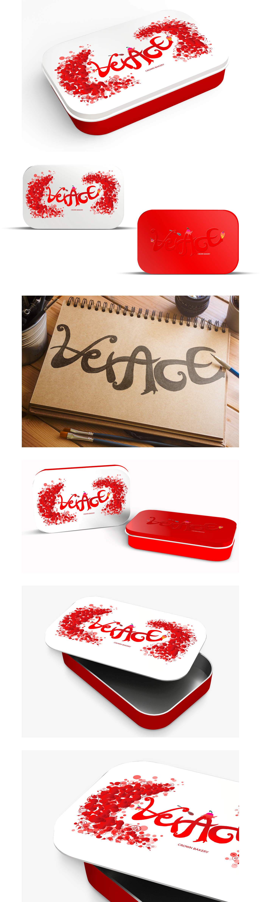

패키지 디자인
PACKAGE Design
VERACE COOKIES
크라운 베이커리
베라체쿠키 공모전 출품작

01
수제쿠키의 고급스러움과 선물을 주고받는 소비자들의 마음을 쿠키와 함께 전달할 수 있도록 나타냈습니다. 크라운 베이커리의 브랜드 컬러인 레드색상을 사용하여 쿠키의 달콤함과 선물을 주고받는 따뜻한 마음을 느낄 수 있도록 표현하였습니다.
02
